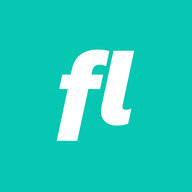

personal lab
useful little things.
A future home for free personal applets, recommended reads, decks, writing, media, and demos that do not need to become a social feed.

fastlabs.iopersonal lab
A future home for free personal applets, recommended reads, decks, writing, media, and demos that do not need to become a social feed.